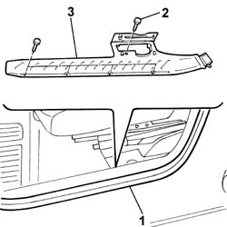

7040L40 REAR COMPARTMENT SCUFF STRIP - R R
- Path
- Procedures > 70 FITTINGS > 7040 BODY INTERIOR FITTINGS AND TRIM > 7040L CABIN FLOOR COVERING > 7040L40 REAR COMPARTMENT SCUFF STRIP - R R
- Kind
- repair procedure (removal / refitting; the operation number is the code)
- Applies to
- all engines; all production periods
- Interactive page
- https://sloeber94.github.io/elrnDB-fUlss/en/#/179007835
Applies to: all engines; all production periods
 Removing
Removing
 Refitting
RefittingOp. 7040H29 FRONT PILLAR LOWER COVER (ONE), LEFT OR RIGHT - R.R.
1. Partly release the door housing frame seal.
2. Undo the retaining bolts.
3. Remove the running board.

Applies to: all engines; all production periods
Refitting
Removing- Place the running board in position.
- Tighten the retaining bolts.
- Position the door housing seal.
Op. 7040H29 FRONT PILLAR LOWER COVER (ONE), LEFT OR RIGHT - R.R.